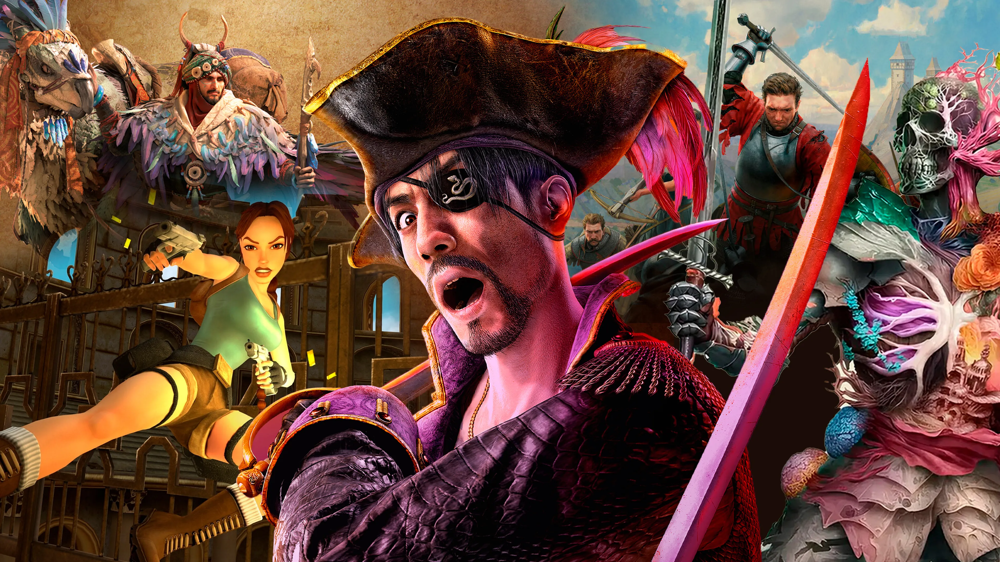
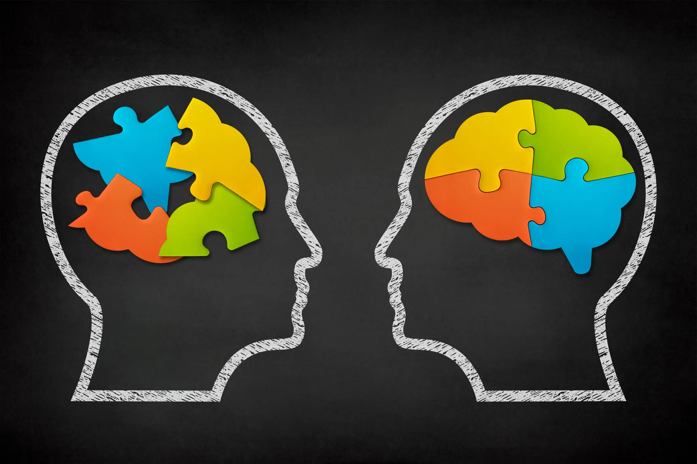

Historia Familiar
Mi mamá era una mujer sencilla, con TDAH igual que yo, pero súper pilas. Siempre fue buena en todo lo que hacía, trabajadora y buena onda. La gente la quería un montón en todos sus trabajos. Conoció a un director, se enamoraron y tuvieron tres hijos: Carlos, Daniel y yo. Se casaron y empezó nuestra historia. Ella se graduó de Perito Contador y mi papá se volvió director del instituto. Gracias a ellos soy quien soy.

Mi Niñez
De chiquito era bien curioso, me la pasaba desarmando todo lo que encontraba solo para ver cómo funcionaba. A veces no podía volver a armarlo, pero igual me divertía. Siempre andaba con mucha energía, me costaba quedarme quieto, pero eso no me detenía. Me gustaba aprender a mi manera, sin seguir las reglas tradicionales. Lo que más me llamaba la atención eran las computadoras, me pasaba horas frente a ellas sin darme cuenta del tiempo.

Adolescencia
Ya de más grande, como que fui entendiendo mejor cómo soy. El TDAH me ha hecho batallar, pero también me volvió más creativo. Empecé a clavarme en lo que me gusta, como programar, y a pensar en serio qué quiero para mi vida. No ha sido fácil, pero ha sido interesante.

Parte Personal
Soy alguien alegre, un poco loco a veces jaja, pero buena onda. Me gusta hacer reír, aprender cosas raras, y ser yo sin copiar a nadie. No me gusta fingir, prefiero ser como soy. Sé que no soy perfecto, pero siempre tengo las ganas de seguir mejorando.

Académico
Estoy estudiando Ing. en Sistemas en la Mariano, voy en primer semestre. Ya tengo algo de experiencia con HTML, CSS, Java script, Lua y python gracias a que mi hermano mayor ya es ingeniero en sistemas y de pequeño el me enseñaba a programar pero actualemente no recuerdo los lenguajes del todo, Pero me emociona un montón. Cada clase es como una mini aventura jaja. Sé que con paciencia y esfuerzo voy a llegar donde quiero.
Metas
Quiero ser programador, pero de los buenos. Me imagino haciendo juegos, programas y cosas que ayuden a todos los usuarios. También quiero crecer en YouTube, tener mi comunidad, enseñar, vacilar... todo eso. Y algún día ayudar a otros chavos que son como yo y a veces se sienten perdidos.

Pasatiempos
Me gusta estar en la compu, jugar videojuegos, ver memes, editar, ver videos y cuando me agarra la loquera, inventar ideas para juegos o historias. Me entretengo mucho creando o aprendiendo cosas nuevas.
Deportes
No soy mucho de deportes pero me gusta el boxeo porque me ayuda a sacar el estrés y sentirme mas fuerte No soy profesional pero me encanta entrenar y mejorar cada dia También me gusta ver partidos de vez en cuando

Lo que me gusta y no me gusta
Me gusta aprender a mi ritmo sin presion Me encantan las compus y todo lo creativo No me gusta que me juzguen por tener TDAH o por aprender diferente Me gusta que confien en mi y que me valoren por como soy
Personas que admiro
Admiro mucho a mi mama porque siempre lucho duro y nunca se rindio Tambien respeto a la gente que sigue adelante aunque la vida sea dificil Y claro a los creadores que empezaron desde cero y ahora la estan rompiendo

Fotos